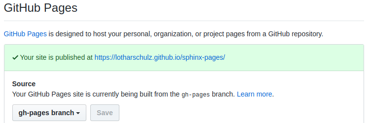

Sphinx-Pages¶
github pages based on sphinx
With calling the sphinx-2-gh-pages-converter shell script you can publish your sphinx based documentation to github pages. The documentation will be available following this pattern:
https//:[github-handle].github.io/[repository]
(e.g. https://lotharschulz.github.io/sphinx-pages/)
Github.com enables pages automatically if a gh-pages branch exists: 
Preconditions¶
- git repository exists in current directory
- sphinx files are part of master branch
- git remote is defined
- permissions to pull, push are granted to the user executing the script
- os package manager is apt-get
- python, pip is installed
Project notes¶
Installation¶
apt-get install python-sphinx #sudo apt-get install python-sphinx
pip install sphinx_rtd_theme #sudo -H pip install sphinx_rtd_theme
#optional
pip install sphinx-autobuild #sudo -H pip install sphinx-autobuild
Project setup¶
sphinx-quickstart # followed all default but set names and author
# conf.py edits as described in https://github.com/rtfd/sphinx_rtd_theme#via-package
# a sample index.rst file
# .gitignore from https://github.com/sphinx-doc/sphinx/blob/master/.gitignore
# generate docs locally
sphinx-build -b html . _build
#optional
sphinx-autobuild . _build --open-browser # opens built docs in browser
Blog Post¶
- https://www.lotharschulz.info/2017/12/11/sphinx-gh-pages/